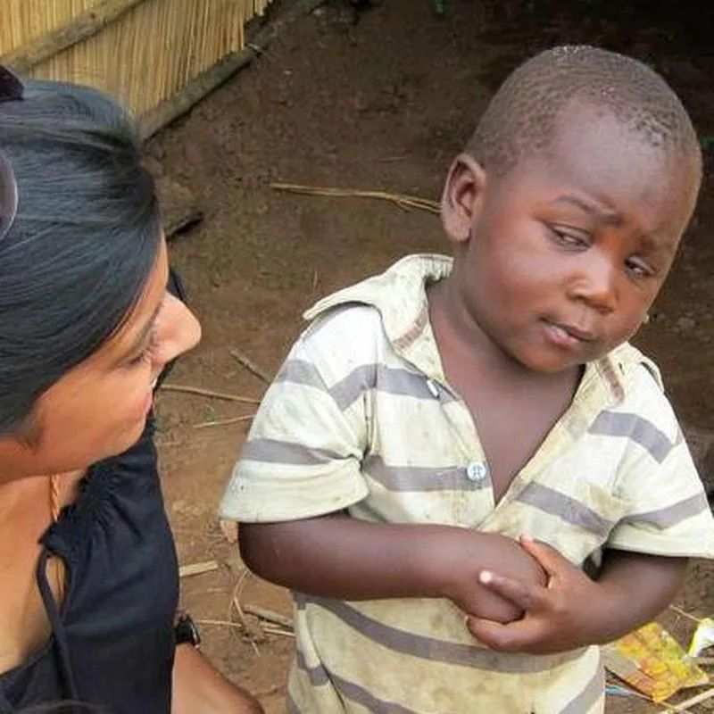
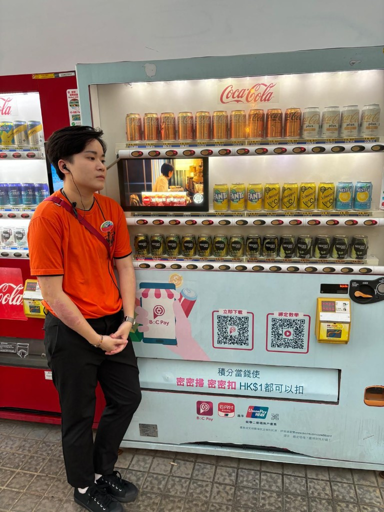

佢係我最好嘅朋友。有時懷疑人生，有時企喺汽水機前面——但永遠係我哋班入面最醒嘅一個。
Poby 係我認識過最特別嘅朋友。佢有兩種模式：一種係「你講乜我都唔信」嘅經典懷疑臉；另一種係企喺香港街頭汽水機旁邊，橙色衫、耳機、隨時準備買罐可樂嘅 chill 模式。
無論你同佢講「聽日一定交功課」定係「呢個優惠真係勁抵」，佢都會用嗰對眉同眼神話你知：「係咪呀？」
但講真，有 Poby 喺度，成班人都安心啲——因為至少有人會幫你諗清楚先。

橙色衫、耳機、BoC Pay 積分當錢使——香港街頭 vibe 滿分。
當有人話「今次真係最後一次」或者「我哋一定準時到」——就會自動觸發呢個表情。經典、無可取代。
企喺可樂機前面，手交叉，眼神望向遠方。可能諗緊飲 Fanta 定 Nescafé，可能諗緊人生。
你話聽日交？我聽過十次喇。 — Poby，懷疑人生模式
密密掃密密扣，但係你請唔請我飲罐嘢先？ — Poby，汽水機模式
我唔係唔信你，我係太了解你。 — Poby，萬用金句
FD 就係：你癲我陪你癲，但你講大話我會望住你。 — Poby，友誼宣言
一個注定要用眉毛改變世界嘅人誕生咗。
第一次用「係咪呀」嘅眼神望住人——從此成為經典 meme 級表情。
喺香港街頭同可樂機合影，橙色衫同 BoC Pay 廣告完美襯托，城市 chill 代表。
唔使多講——最好嘅朋友，就係咁簡單。